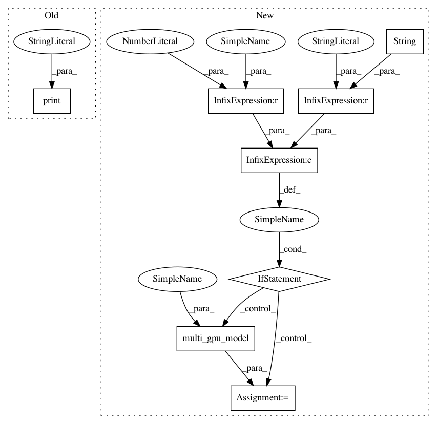

b78d0685b201fa433507a4d4e1d0a0f70a0dc783,scripts/keras_benchmarks/models/mnist_irnn_benchmark.py,MnistIrnnBenchmark,benchmarkMnistIrnn,#MnistIrnnBenchmark#Any#Any#,42
Before Change
x_train /= 255
x_test /= 255
print("x_train shape:", x_train.shape)
print(x_train.shape[0], "train samples")
print(x_test.shape[0], "test samples")
// convert class vectors to binary class matrices
y_train = keras.utils.to_categorical(y_train, num_classes)
After Change
model.add(Activation("softmax"))
rmsprop = RMSprop(lr=learning_rate)
if str(keras_backend) is "tensorflow" and gpu_count > 1:
model = multi_gpu_model(model, gpus=gpu_count)
model.compile(loss="categorical_crossentropy",
optimizer=rmsprop,
metrics=["accuracy"])
In pattern: SUPERPATTERN
Frequency: 3
Non-data size: 8
Instances
Project Name: tensorflow/benchmarks
Commit Name: b78d0685b201fa433507a4d4e1d0a0f70a0dc783
Time: 2017-11-01
Author: anjalisridhar@google.com
File Name: scripts/keras_benchmarks/models/mnist_irnn_benchmark.py
Class Name: MnistIrnnBenchmark
Method Name: benchmarkMnistIrnn
Project Name: tensorflow/benchmarks
Commit Name: b78d0685b201fa433507a4d4e1d0a0f70a0dc783
Time: 2017-11-01
Author: anjalisridhar@google.com
File Name: scripts/keras_benchmarks/models/mnist_irnn_benchmark.py
Class Name: MnistIrnnBenchmark
Method Name: benchmarkMnistIrnn
Project Name: tensorflow/benchmarks
Commit Name: b78d0685b201fa433507a4d4e1d0a0f70a0dc783
Time: 2017-11-01
Author: anjalisridhar@google.com
File Name: scripts/keras_benchmarks/models/cifar10_cnn_benchmark.py
Class Name: Cifar10CnnBenchmark
Method Name: benchmarkCifar10Cnn
Project Name: tensorflow/benchmarks
Commit Name: b78d0685b201fa433507a4d4e1d0a0f70a0dc783
Time: 2017-11-01
Author: anjalisridhar@google.com
File Name: scripts/keras_benchmarks/models/lstm_text_generation_benchmark.py
Class Name: LstmTextGenBenchmark
Method Name: benchmarkLstmTextGen